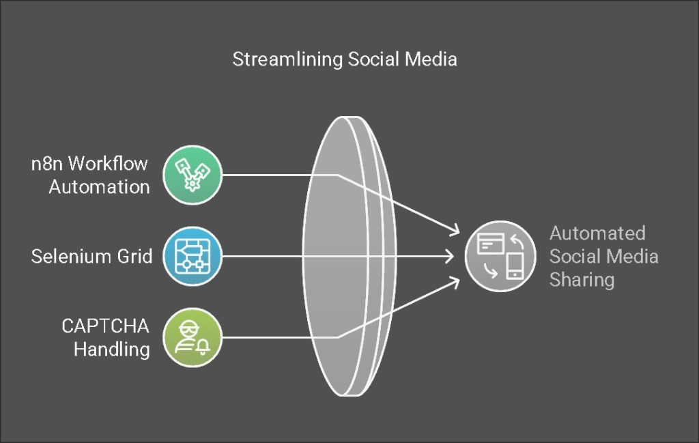

Automate Your Team's Social Media Sharing with n8n, Selenium Grid, and CAPTCHA Handling 🚀

The Challenge: Expanding Your Content Reach 🎯
In today's digital landscape, maximizing the reach of your content across platforms is crucial for brand visibility. One effective strategy is leveraging your employees' social networks—but manually coordinating this process can be time-consuming and inefficient.
Our Solution: An Automated Sharing System 💻
We've designed a comprehensive workflow that allows your team members to automatically share content links across their personal accounts, significantly amplifying your reach without the manual effort.
The Technology Stack We'll Use 🛠️
-
n8n 🔄: A powerful, node-based workflow automation tool that integrates seamlessly with various platforms
-
Selenium Grid 🌐: A browser automation framework that can simulate real user interactions across multiple browsers simultaneously
-
CAPTCHA Solution 🔐: Handling those pesky verification challenges that protect platforms from automated actions
Why These Tools Are Perfect for the Job 🤔
-
n8n offers exceptional flexibility with its extensive integration capabilities and custom code options, making it ideal for complex automation sequences
-
Selenium Grid enables parallel execution across multiple browsers, simulating authentic sharing activities from your team members' accounts
-
CAPTCHA handling ensures your automation won't be blocked by security measures on social platforms
Implementation Guide: Step-by-Step Approach 📝
1. System Architecture Design 🏗️
-
Data Collection: Store shareable links and employee account credentials in a centralized location (Google Sheets or Notion)
-
Automation Flow: n8n retrieves these links and triggers Selenium Grid to perform sharing actions through employee accounts
-
CAPTCHA Management: Implement either a testing environment bypass or integrate with a CAPTCHA-solving service like 2Captcha
2. Setting Up Your n8n Workflow in Detail 🔍
Data Collection with Google Sheets 📊
-
Create a spreadsheet with columns for: Link, Employee Name, Platform, Username, Password
-
Configure the "Google Sheets" node in n8n to fetch this data at scheduled intervals
-
Implement proper encryption for sensitive credential information
Browser Automation with Selenium Grid 🤖
While n8n doesn't have a native Selenium node, you can connect to Selenium Grid via HTTP requests or custom code. Here's how:
-
Set up Selenium Grid on a server (Docker makes this simple)
-
Create platform-specific Python scripts for different sharing actions
For example, here's a sample script for Twitter sharing:
from selenium import webdriver
from selenium.webdriver.common.keys import Keys
driver = webdriver.Remote(
command_executor='http://selenium-grid-url:4444/wd/hub',
desired_capabilities={'browserName': 'chrome'}
)
driver.get('https://twitter.com/login')
driver.find_element_by_name('username').send_keys('username')
driver.find_element_by_name('password').send_keys('password', Keys.RETURN)
driver.get('https://twitter.com/compose/tweet')
driver.find_element_by_css_selector('div[role="textbox"]').send_keys('Check out this amazing content: https://example.com')
driver.find_element_by_css_selector('div[data-testid="tweetButton"]').click()
driver.quit()
- Trigger these scripts from n8n using "Execute Command" or "HTTP Request" nodes
CAPTCHA Solution Implementation 🧩
For handling CAPTCHAs, you have two options:
Testing Environment:
- Disable CAPTCHAs in developer settings during your testing phase
Production Environment:
-
Integrate with 2Captcha or similar services
-
Use HTTP Request nodes in n8n to send CAPTCHA challenges and receive solutions
Here's sample code to integrate 2Captcha with your Selenium script:
import requests
api_key = 'YOUR_2CAPTCHA_API_KEY'
captcha_id = requests.post('http://2captcha.com/in.php', data={
'key': api_key,
'method': 'userrecaptcha',
'googlekey': 'SITE_KEY',
'pageurl': 'https://twitter.com'
result = requests.get(f'http://2captcha.com/res.php?key={api_key}&action=get&id={captcha_id}').text
driver.execute_script(f'document.getElementById("g-recaptcha-response").innerHTML="{result}";')
Workflow Scheduling and Monitoring ⏱️
-
Implement a "Schedule Trigger" node to run your workflow at optimal times for engagement
-
Update a "Status" column in your Google Sheet after each sharing attempt
-
Add error handling with email notifications for failed attempts
3. Complete Workflow JSON Template 📋
Here's a sample n8n workflow in JSON format to get you started (you'll need to customize the Selenium server address and scripts):
{
"nodes": [
{
"parameters": {
"triggerTimes": {
"item": [
{
"hour": 9,
"minute": 0
}
]
}
},
"name": "Schedule Trigger",
"type": "n8n-nodes-base.scheduleTrigger",
"position": [240, 300]
},
{
"parameters": {
"authentication": "oAuth2",
"operation": "getAll",
"spreadsheetId": "YOUR_GOOGLE_SHEET_ID",
"sheetName": "Sheet1",
"returnAll": true
},
"name": "Google Sheets",
"type": "n8n-nodes-base.googleSheets",
"position": [460, 300],
"credentials": {
"googleSheetsOAuth2Api": "Google Credentials"
}
},
{
"parameters": {
"requestMethod": "POST",
"url": "http://selenium-grid-url:4444/run-script",
"jsonParameters": true,
"options": {},
"bodyParametersJson": "{{ JSON.stringify({ link: $node['Google Sheets'].json['Link'], username: $node['Google Sheets'].json['Username'], password: $node['Google Sheets'].json['Password'] }) }}"
},
"name": "Selenium Share",
"type": "n8n-nodes-base.httpRequest",
"position": [680, 300]
}
],
"connections": {
"Schedule Trigger": {
"main": [
[
{
"node": "Google Sheets",
"type": "main",
"index": 0
}
]
]
},
"Google Sheets": {
"main": [
[
{
"node": "Selenium Share",
"type": "main",
"index": 0
}
]
]
}
}
}
System Requirements and Setup Guide 💾
Essential Components
- Selenium Grid Installation 🖥️
Set up with Docker using these commands:
docker run -d -p 4444:4444 --name selenium-hub selenium/hub
docker run -d --link selenium-hub:hub selenium/node-chrome
-
2Captcha Account 🔑
Register and obtain an API key for CAPTCHA solving capabilities -
n8n Installation ⚙️
Deploy either on cloud infrastructure or local servers
Advanced Recommendations for Enterprise Implementation 🔥
Security Enhancements 🔒
-
Implement credential encryption using n8n's built-in credential management system
-
Consider using environment variables for sensitive information
-
Regularly rotate passwords and API keys
Error Management and Reliability 🛡️
-
Add comprehensive error handling with detailed logging
-
Implement email notifications (using the Gmail node) for critical failures
-
Create fallback mechanisms for failed sharing attempts
Performance Optimization 📈
-
Scale your Selenium Grid with multiple nodes to handle concurrent sharing operations
-
Implement rate limiting to avoid platform detection of automated activities
-
Schedule shares during optimal engagement times for each platform
Measuring Success: Analytics Integration 📊
Take your implementation further by:
-
Tracking click-through rates on shared links
-
Measuring engagement metrics across platforms
-
A/B testing different sharing messages for optimal results
Conclusion: Transform Your Content Distribution Strategy 🌟
By implementing this automated sharing system, you'll dramatically increase your content's reach by leveraging your team's collective social networks—all without adding to their workload. The combination of n8n, Selenium Grid, and CAPTCHA handling creates a robust, scalable solution that can adapt to various platforms and sharing needs.
Ready to get started or have questions about customizing this solution for your specific requirements? Let us know in the comments below! 👇
Imported from rifaterdemsahin.com · 2025